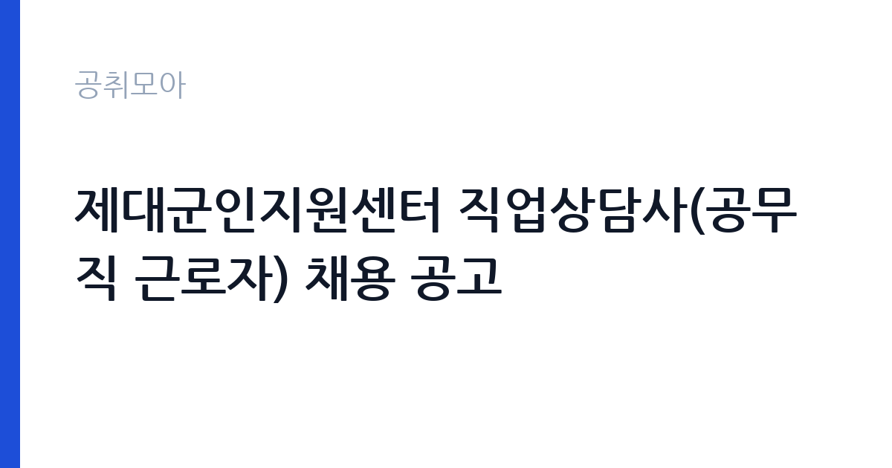

[국가기관] 제대군인지원센터 직업상담사(공무직 근로자) 채용 공고
국가보훈부 서울지방보훈청 경기남부보훈지청 · 경기 · 마감 2026-11-10 (D-7) · 출처 나라일터

한눈에 보는 모집 조건
| 기관 | 국가보훈부 서울지방보훈청 경기남부보훈지청 |
|---|---|
| 공고명 | 제대군인지원센터 직업상담사(공무직 근로자) 채용 공고 |
| 고용형태 | 공무직 |
| 근무지 | 경기 |
| 게시일 | 2026-11-03 |
| 마감일 | 2026-11-10 (D-7) |
지원자격, 이렇게 읽으세요
- 공무직 1명
- 접수 ~2026-11-10 마감
- 세부 조건은 원문 공고문 확인
공무직 근로자는 공무원이 아니라 근로기준법이 적용되는 근로자이지만 기간의 정함이 없는 무기계약으로 채용되는 경우가 많아 정년까지 근무가 가능합니다. 채용은 공무원 시험과 달리 기관의 자체 전형으로 진행되고 인사 규정과 임금표를 적용받습니다. 이번 공고는 국가보훈부 서울지방보훈청 경기남부보훈지청에서 직접 진행하는 자체 전형으로, 응시자격과 제출서류는 공고문에 항목별로 제시됩니다. 직업상담 직무는 관련 자격과 경력을 봅니다. 직업상담사 자격증 소지자가 우대되거나 요건으로 붙는 경우가 많고, 고용서비스나 취업 지원 업무 경력은 실무 연관성이 높습니다. 공무직으로 채용되면 무기계약 신분이 되어 정년까지 근무가 가능하고, 수습 기간 평가를 거칩니다. 남자는 병역 요건을 충족해야 하고 결격사유 조회 절차가 따릅니다. 모집 인원이 1명이므로 서류 완성도가 결과에 직접 영향을 줍니다. 서류는 접수 마감 이후 보완이 되지 않으므로 자격 요건과 증빙 서류를 마감 전에 모두 갖춰야 합니다. 공고문에 명시된 우대 사항은 해당 여부를 확인해 증빙을 첨부해야 가점이 반영됩니다. 자격증은 유효 기간과 등록 상태를 확인해야 합니다. 갱신이 필요한 자격이라면 갱신 여부를 먼저 점검하십시오.
이 공고의 포인트
이 공고의 첫 번째 포인트는 고용 형태입니다. 무기계약으로 채용되면 정년까지 근무가 가능해 재계약 부담이 없습니다. 반대로 기간제로 채용되는 공고라면 계약 기간을 먼저 확인해야 합니다. 두 번째는 업무 범위가 명확하다는 점입니다. 직업상담사(제대군인 지원) 직무로 채용되므로 배치 이후 담당 업무가 크게 흔들리지 않습니다. 세 번째는 근무지입니다. 경기 지역 근무로 접근성은 좋지만 그만큼 지원자가 몰리는 지역이므로 경쟁률을 넉넉히 잡아야 합니다. 선발 절차가 단순한 편이어서 서류와 면접 준비에 집중할 수 있습니다. 같은 직무로 함께 올라온 공고 4건 가운데 마감이 중간에 위치하므로 다른 공고와 일정이 겹치는지 확인하십시오. 다만 선발 인원이 1명으로 많지 않아 자격을 갖춘 지원자가 몰리면 경쟁률이 높아질 수 있습니다.
전형은 어떻게 진행되나
서류전형과 면접전형 외에 직무수행능력 평가가 붙는 경우가 있습니다. 평가 방식은 공고문에 구체적으로 적혀 있으므로 어떤 항목에 배점이 높은지 먼저 파악하십시오. 면접에서는 지원 동기보다 실제 업무 경험에 대한 질문이 많고, 답변의 구체성이 평가를 가릅니다. 전형 일정은 서류 마감 이후 빠르게 진행되므로 연락 가능한 번호를 정확히 기재하고 문자와 메일을 수시로 확인해야 합니다. 최종 단계에서는 결격사유 조회와 신체검사가 진행됩니다. 결과 발표는 문자와 이메일로 동시에 이뤄지지 않는 경우가 있어 두 경로를 모두 확인하십시오.
이런 분께 추천해요
- 직업상담사 자격이나 취업 상담 경력이 있는 분
- 구인처 발굴과 알선 업무를 수행할 수 있는 분
- 상담 기록과 실적 관리를 꼼꼼히 하는 분
지원 전 체크리스트
- 응시자격 요건과 경력 기준을 충족하는가 — 경력은 증명서로 입증해야 합니다
- 무기계약 여부와 정년 기준을 공고문에서 확인했는가
- 제출서류 목록을 모두 준비했는가 — 누락 시 서류 단계에서 탈락합니다
- 접수 마감 2026-11-10 이전에 접수 방식을 확인해 제출했는가
모집 일정과 제출 타이밍
공고 게시일은 2026-11-03, 접수 마감은 2026-11-10입니다. 준비 기간은 약 7일로 서류 준비와 자격 증빙을 함께 처리하기에는 넉넉하지 않은 편입니다. 첫 이틀 안에 공고문과 첨부 서식을 내려받아 요건을 확인하고 남은 기간에 증빙 서류를 발급받는 일정이 현실적입니다. 면접은 서류 합격자 발표 후 짧은 간격으로 진행되는 경우가 많으므로 서류 제출과 동시에 면접 준비를 시작하는 편이 안전합니다. 마감일에는 접수 시스템이 몰리므로 하루 전까지 제출을 마치는 것이 좋습니다. 임용 예정일이 빠르게 잡히는 공고이므로 현재 일정과 겹치지 않는지 미리 확인하십시오. 경기 지역 근무지는 사업소나 시설이 외곽에 있는 경우가 많아 차량 통근 가능 여부를 확인해야 합니다. 마감까지 일주일 안팎이 남아 서류 준비와 증빙 발급을 병행해야 합니다. 선발 인원이 한두 명 수준이라 지원자 개개인의 서류 완성도가 그대로 평가에 반영됩니다.
직무 이해하기: 국가기관
경기남부보훈지청 제대군인지원센터의 직업상담사는 전역 예정자와 제대군인의 취업 상담을 맡습니다. 상담 신청자를 만나 경력과 희망 직무를 확인하고, 구직 계획을 함께 세웁니다. 구인처를 발굴해 일자리를 알선하고, 채용 기업과 근로 조건을 조율합니다. 직업 교육과 취업 설명회를 기획해 운영하고, 상담·알선 실적을 기록해 관리합니다. 제대군인 지원 제도와 각종 취업 지원금 안내도 상담 과정에 포함됩니다. 업무 강도와 근무 시간대는 부서 배치에 따라 달라지므로 면접에서 확인하는 것이 가장 정확합니다.
자기소개서 작성 팁
지원서는 상담·알선 실적을 수치로 정리하는 것이 효과적입니다. 상담 건수, 알선 인원, 취업 성공 사례를 구체적으로 쓰고, 본인이 맡았던 역할을 분명히 밝히십시오. 직업상담사 자격과 취업 지원 교육 이수 내역은 앞에 배치하십시오. 제대군인은 군 경력을 민간 직무로 전환하는 상담이 핵심이므로, 경력 전환을 도운 경험이 있다면 강조할 만합니다. 구성은 지원 동기, 직무 경험, 기여 방안 순서가 무난합니다. 지원 동기는 국가보훈부 서울지방보훈청 경기남부보훈지청의 사업 중 본인이 관심을 가진 부분을 한 가지로 좁혀 서술하고 추상적인 표현은 줄이십시오. 직무 경험은 담당했던 업무와 규모, 결과를 수치로 제시하면 설득력이 올라갑니다. 기여 방안은 입사 후 첫 3개월과 1년 계획으로 나눠 쓰면 준비도가 드러납니다.
면접 준비 포인트
면접에서는 상담 실무와 알선 역량을 확인합니다. 구직자가 희망 직무와 경력이 맞지 않을 때 어떻게 설득할지, 기업이 채용 조건을 바꿀 때 어떻게 조율할지 묻습니다. 상담 기록을 어떻게 관리했는지, 취업 지원 제도를 어느 정도 알고 있는지도 질문 대상입니다. 제대군인의 경력 특성을 이해하고 있다는 점을 보여주면 신뢰를 얻습니다. 답변은 상황, 판단, 조치의 순서로 정리하면 전달이 분명해집니다. 모르는 질문에는 모른다고 밝히고 확인 방법을 제시하는 편이 억지 답변보다 낫습니다. 마지막에는 근무 의사와 함께 2026-11-10 이후 일정에 언제든 응할 수 있다는 점을 전달하십시오. 본인 경험을 말할 때는 기간, 역할, 결과를 순서대로 정리해 두면 질문이 바뀌어도 활용할 수 있습니다.
급여·근무조건 읽는 법
공무직 근로자 보수는 국가보훈부 공무직 임금 기준과 경력 인정에 따라 정해지며, 기본급에 정액급식비·명절휴가비·복지포인트가 더해집니다. 무기계약 신분이면 호봉이 오르고 정년까지 근무가 가능해 장기 총액이 커집니다. 2026년 적용 최저임금은 시급 10,320원, 월 환산 2,156,880원이 최소 기준입니다. 직급과 호봉 산정 결과, 수당 항목은 공고문 처우표에서 확인하십시오. 2026년 적용 최저임금은 시급 10,320원, 월 환산 2,156,880원(주 40시간·209시간 기준)입니다. 고용노동부 고시 제2025-47호로 확정된 금액입니다. 공고문에 금액이 제시되지 않은 항목은 원문 보수표나 처우 설명에서 확인해야 하며 확인되지 않은 수치는 쓰지 않는 것이 원칙입니다. 비교할 때는 월 급여뿐 아니라 상여·명절휴가비·복지포인트·초과근무수당까지 포함한 연간 총액으로 계산하십시오. 기간제라면 계약 기간 동안의 총액을, 무기계약이라면 호봉 상승과 정년까지의 누적 소득을 기준으로 판단하는 편이 정확합니다.
자주 묻는 질문
- 선발 인원은 몇 명인가요?
공고문 기준 1명입니다. 직종별로 인원이 나뉘는 경우가 있으니 모집분야 항목을 함께 확인하십시오. - 근무지는 어디인가요?
경기 지역의 국가보훈부 서울지방보훈청 경기남부보훈지청 소속 근무지입니다. 세부 주소와 출퇴근 조건은 원문 공고문에서 확인할 수 있습니다. - 보수는 얼마인가요?
채용 신분(공무직)과 기관 임금 규정에 따라 정해지며 구체적인 금액은 공고문 처우 항목에 제시됩니다. 금액이 공개되지 않은 경우에는 원문의 보수표를 확인하십시오.
함께 보면 좋은 공고
[국가기관] 임기제공무원(일반임기제, 통번역 6급, 1명) 경력경쟁채용 공고 — 마감 2026-11-18[국가기관] 2026년도 제7회 국립목포대학교 기간제 채용 공고 (인권센터 상담) — 마감 2026-11-13[국가기관] 2026년 하반기 지역별사업체노동력조사 통계조사관 추가 채용공고 — 마감 2026-11-09출처: 나라일터 공개정보를 바탕으로 공취모아가 정리한 안내글입니다. 모집 조건·일정은 변경될 수 있으니 지원 전 반드시 원문 공고문을 확인하세요. 본 글은 정보 제공용이며 합격을 보장하지 않습니다.